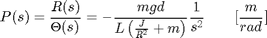
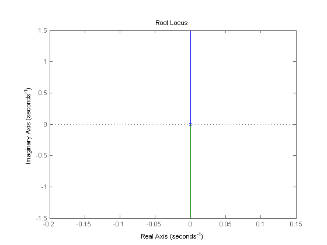
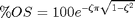
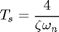
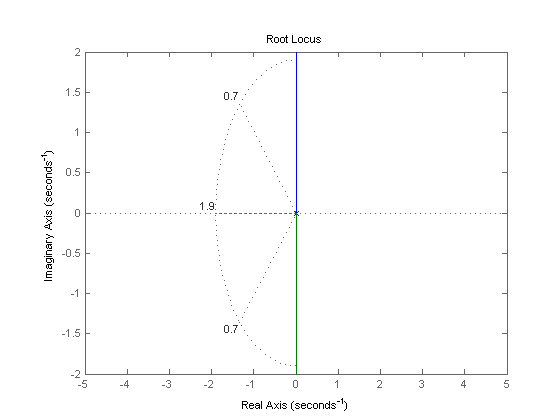
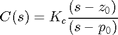
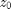
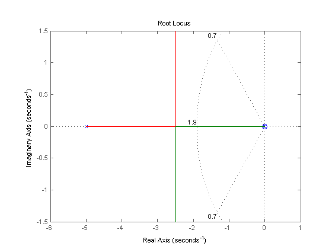
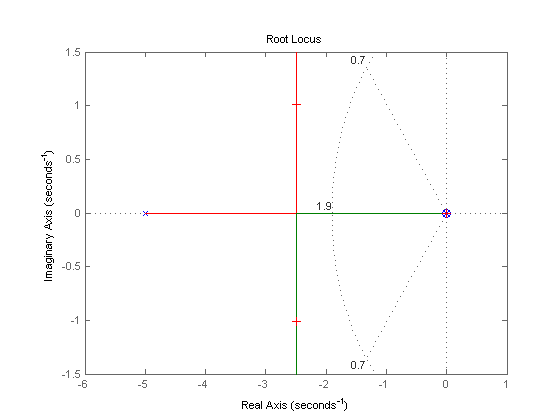
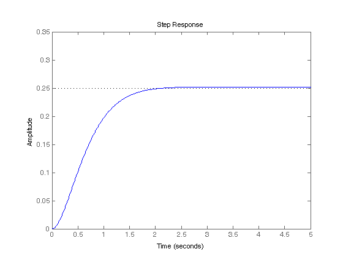

Ball & Beam: Root Locus Controller Design
Key MATLAB commands used in this tutorial are: tf , rlocus , sgrid , feedback , step
Contents
The open-loop transfer function of the plant for the ball and beam experiment is given below:
(1)
The design criteria for this problem are:
- Settling time less than 3 seconds
- Overshoot less than 5%
To see the derivation of the equations for this problem refer to the Ball & Beam: System Modeling page.

Open-loop root locus
The main idea of the root locus design is to estimate the closed-loop response from the open-loop root locus plot. By adding zeroes and/or poles to the original system (adding a compensator), the root locus and thus the closed-loop response will be modified. Let us first view the root locus for the plant in open loop. Create a new m-file with the following MATLAB code in order to model the plant and plot the root locus. Now, run the m-file and you should see the following root locus plot:
m = 0.111;
R = 0.015;
g = -9.8;
L = 1.0;
d = 0.03;
J = 9.99e-6;
s = tf('s');
P_ball = -m*g*d/L/(J/R^2+m)/s^2;
rlocus(P_ball)
 As you can see the system has two poles at the origin which go off to infinity along the imaginary axes.
The design criteria can also be plotted onto the root locus using the sgrid command. This command generates a grid of constant damping ratio and natural frequency. The damping ratio and natural frequency were found using the following equation, which relates them to our percent overshoot (%OS) and settling time (Ts) requirements:
(2)
(3)
Note, that the equation with Ts is found by assuming the system has settled is when the response remains within 2% of its final value. From these equations, the damping ratio and natural frequency were found to be 0.7 and 1.9 respectively.
sgrid(0.70, 1.9) axis([-5 5 -2 2])
The area between the two dotted diagonal lines represents locations where the percent overshoot is less than 5%. The area outside the curved line represents locations where the settling time is less than 3 seconds. Note that no region of the plot falls within the design criteria shown be these lines. To remedy this and bring the root locus into the left-hand plane for stability we will try adding a lead-compensator to the system.
Lead controller
A first order lead compensator tends to shift the root locus into the left-hand plane. For a more detailed description of lead compensators refer to the Lead & Lag Compensator Design page. A lead compensator has the form given below:
(4)
where, the magnitude of  is less than the magnitude of .
Now, let us add the controller to the plant and view the root locus. We will position the zero near the origin to cancel out one of the poles. The pole of our compensator will be placed to the left of the origin to pull the root locus further into the left-hand plane. Add the following lines of MATLAB code to your m-file. Run your m-file in the MATLAB command window and you should see the following:
zo = 0.01; po = 5; C=tf([1 zo],[1 po]); rlocus(C*P_ball) sgrid(0.70, 1.9)
Now, the branches of the root locus are within our design criteria.
Selecting the gain
Now that we have moved the root locus into the left-hand plane, we may select a gain that will satisfy our design requirements. We can use the rlocfind command to help us do this. Add the code [k,poles]=rlocfind(C*P_ball) onto the end of your m-file.
Then go to the plot and select a point near those indicated by the cross marks on the plot below.

After doing this, you should see the following output in the MATLAB command window.
Select a point in the graphics window
selected_point =
-2.4917 + 1.0109i
k =
34.7474
poles =
-2.4950 + 1.0109i
-2.4950 - 1.0109i
-0.0101
Note that the values returned in your MATLAB command window may not be exactly the same, but should at least have the same order of magnitude. Now, we can plot the response with this gain.
Plotting the closed-loop response
This value of Kc can be put into the system and the closed-loop response to a step input of 0.25 m can be obtained. Add the following lines to your m-file to perform this analysis. Run your m-file and select a point on the root locus similar to the selected point above. The step response should look like the following.
sys_cl=feedback(k*C*P_ball,1);
t=0:0.01:5;
figure
step(0.25*sys_cl,t)

From this plot we see that when a 0.25m step input is given to the system both the settling time and percent overshoot design criteria are met.
Note: A design problem does not necessarily have a unique answer. Using this method (or any other) may result in many different compensators. Try running your m-file several more times selecting a different point each time and study the effect this has on the step response. For practice you may also want to go back to the original open-loop root locus and try to find other ways to add zeros and poles to get a better response.